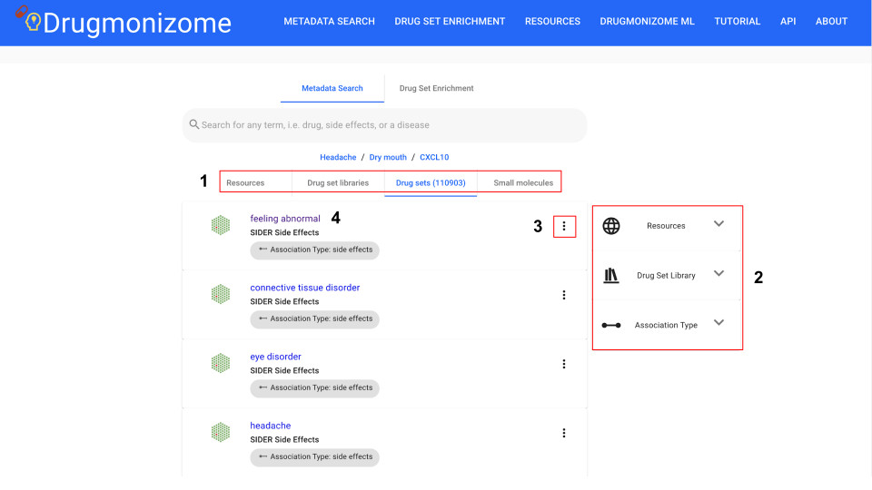
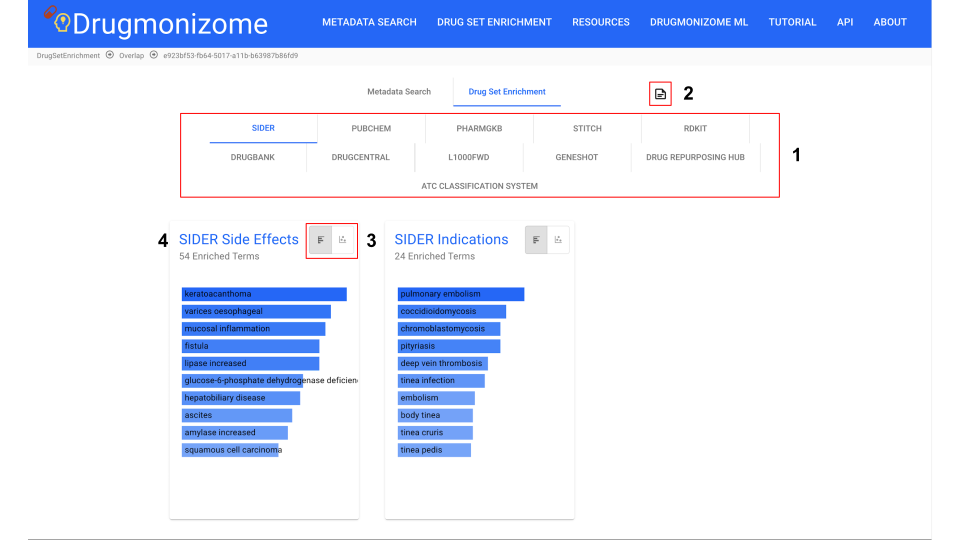

Fig 5. Switching between bar graph and scatter plot representations

Fig 6. Exploring enriched drug sets within a particular library
The metadata search page allows users to query biomedical terms to search for resources, drug set libraries, drug sets, or small molecules that include the query term. Users input a term of interest into the search field and click submit to launch the search. The user is then presented with a results page of resources, libraries, drug sets, or small molecules depending on their selection.
Fig 1. Metadata Search page with interactable elements highlighted

Fig 2. Drug set page example showing drug set metadata and searchable small molecule set
The drug set enrichment page takes small molecule identifiers as input. Small molecules can be queried by name, InChI key, SMILES strings, as well as DrugBank IDs and Broad Institute IDs (BRD-IDs). If the entity is resolved within the database, it is marked with a green checkmark. When submitted, drug set enrichment analysis is performed on the input list.

Fig 3. Enrichment analysis page with "Example Drug Set 1" input in the search box
The results page displays the resources with enriched drug sets which can be expanded to peruse individual drug set libraries and drug sets within the libraries. The results for each library are capped to the top 100 enriched drug sets.
Fig 4. Enrichment results page for example drug set
Fig 5. Switching between bar graph and scatter plot representations
Fig 6. Exploring enriched drug sets within a particular library
A page of all resources in Drugmonizome is available. Clicking on any of the resources brings users to a page with identifying metadata for the resource and drug set libraries within the resource.

Fig 7. Resources page